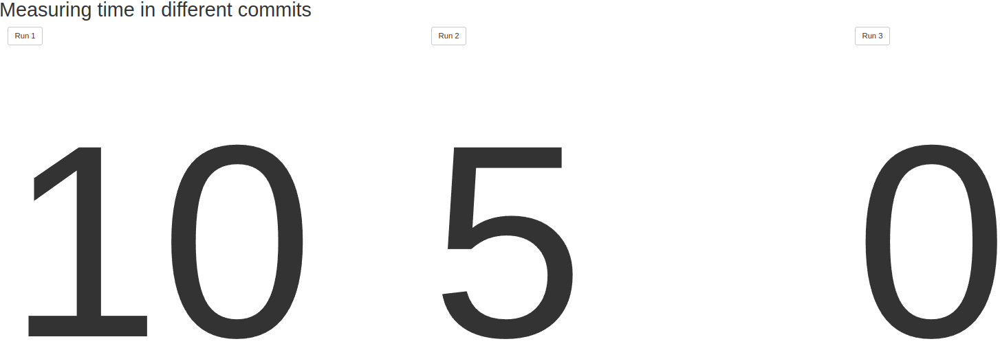
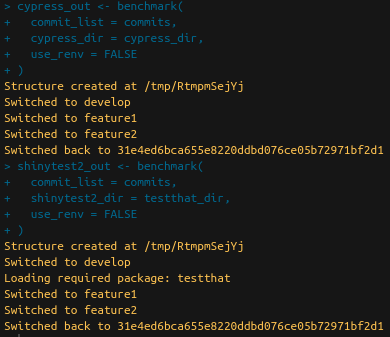
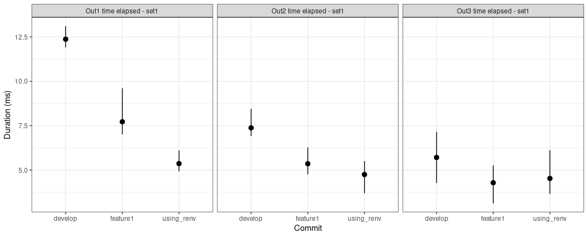

Tutorial: Compare performance of different versions of a shiny application
Source:vignettes/tutorial/how-to-measure-apps-performance.Rmd
how-to-measure-apps-performance.RmdSetup
How to install shiny.benchmark?
shiny.benchmark can use two different engines to test
the changes in the performance of your application: shinytest2 and Cypress. The latter requires
Node (version 12 or higher) and yarn (version
1.22.17 or higher) to be available. To install them on your computer,
follow the guidelines on the documentation pages:
Besides that, on Linux, it might be required to install other
Cypress dependencies. Check the documentation
to find out more.
To install shiny.benchmark use the following
command:
remotes::install_github("Appsilon/shiny.benchmark")shiny.benchmark will handle Cypress
installation. If you face any inconvenience using Cypress,
please try to use shinytest2 in the rest of this
tutorial.
Create an initial application
Let’s start by creating an application that will serve us as a guide
through the shiny.benchmark functionalities.
Save the following code as ui.R. It is a simple user
interface containing three columns with one action button in each. Also
each column has an output which will be created in the server file
later.
function() {
bootstrapPage(
tags$h1("Measuring time in different commits"),
column(
width = 4,
actionButton(inputId = "run1", label = "Run 1"),
uiOutput(outputId = "out1")
),
column(
width = 4,
actionButton(inputId = "run2", label = "Run 2"),
uiOutput(outputId = "out2")
),
column(
width = 4,
actionButton(inputId = "run3", label = "Run 3"),
uiOutput(outputId = "out3")
)
)
}In the server side, the application will use the
Sys.sleep function to simulate a task every time the user
press a button. This will be helpful for us since we can easily
increase/decrease the sleep time to simulate improvements/deterioration
of the application. Save the following code as
server.R:
times <- c(10, 5, 2)
function(input, output, session) {
# Sys.sleep
react1 <- eventReactive(input$run1, {
out <- system.time(
Sys.sleep(times[1] + rexp(n = 1, rate = 1)) # we will play with the time here
)
return(out[3])
})
react2 <- eventReactive(input$run2, {
out <- system.time(
Sys.sleep(times[2] + rexp(n = 1, rate = 1)) # we will play with the time here
)
return(out[3])
})
react3 <- eventReactive(input$run3, {
out <- system.time(
Sys.sleep(times[3] + rexp(n = 1, rate = 1)) # we will play with the time here
)
return(out[1])
})
# outputs
output$out1 <- renderUI({
tags$span(round(react1()), style = "font-size: 5vw;")
})
output$out2 <- renderUI({
tags$span(round(react2()), style = "font-size: 5vw;")
})
output$out3 <- renderUI({
tags$span(round(react3()), style = "font-size: 5vw;")
})
}The application should look like this:
shiny::runApp()
Tests engines
shiny.benchmark works under two different engines:
Cypress and shinytest2.
shinytest2
shinytest2 is an R package maintained by Posit (formerly RStudio). It is handy for R
users since all tests can be done using R only (differently than
Cypress). To set up it easily, run
shinytest2::use_shinytest2(). It will create configuration
files which you do not need to change for this tutorial.
Save the following code as
tests/testthat/test-set1.R:
test_that("Out1 time elapsed - set1", {
app <- AppDriver$new(name = "test1", height = 975, width = 1619)
app$click("run1")
app$expect_values(output = "out1")
})
test_that("Out2 time elapsed - set1", {
app <- AppDriver$new(name = "test2", height = 975, width = 1619)
app$click("run2")
app$expect_values(output = "out2")
})
test_that("Out3 time elapsed - set1", {
app <- AppDriver$new(name = "test3", height = 975, width = 1619)
app$click("run3")
app$expect_values(output = "out3")
})This code is simulating clicks in the three buttons we have in our
application. Also it waits for the outputs to appear. In a new file,
replace set1 by set2 in the code and save it
as tests/testthat/test-set2.R as well. It will be useful to
present some functionalities later.
test_that("Out1 time elapsed - set2", {
app <- AppDriver$new(name = "test1", height = 975, width = 1619)
app$click("run1")
app$expect_values(output = "out1")
})
test_that("Out2 time elapsed - set2", {
app <- AppDriver$new(name = "test2", height = 975, width = 1619)
app$click("run2")
app$expect_values(output = "out2")
})
test_that("Out3 time elapsed - set2", {
app <- AppDriver$new(name = "test3", height = 975, width = 1619)
app$click("run3")
app$expect_values(output = "out3")
})Cypress
Cypress is a widely used end to end testing JavaScript library. Because its broader usage, this engine allows the user to take advantage of a huge number of functionalities in order to test its applications. Also, the community is active and therefore it is easier to find solution for bugs you may encounter while coding.
Save the following code as
tests/cypress/test-set1.js:
describe('Cypress test', () => {
it('Out1 time elapsed - set1', () => {
cy.visit('/');
cy.get('#run1').click();
cy.get('#out1', {timeout: 10000}).should('be.visible');
});
// Test how long it takes to wait for out2
it('Out2 time elapsed - set1', () => {
cy.get('#run2').click();
cy.get('#out2', {timeout: 10000}).should('be.visible');
});
// Test how long it takes to wait for out3
it('Out3 time elapsed - set1', () => {
cy.get('#run3').click();
cy.get('#out3', {timeout: 10000}).should('be.visible');
});
});Again, replace set1 by set2 in the code and
save it as tests/cypress/test-set2.R as well.
describe('Cypress test', () => {
it('Out1 time elapsed - set2', () => {
cy.visit('/');
cy.get('#run1').click();
cy.get('#out1', {timeout: 10000}).should('be.visible');
});
// Test how long it takes to wait for out2
it('Out2 time elapsed - set2', () => {
cy.get('#run2').click();
cy.get('#out2', {timeout: 10000}).should('be.visible');
});
// Test how long it takes to wait for out3
it('Out3 time elapsed - set2', () => {
cy.get('#run3').click();
cy.get('#out3', {timeout: 10000}).should('be.visible');
});
});Package management
During the development process, it is normal to use different
packages/package versions. renv allow us to manage package
versions and is used by shiny.benchmark by default. Run the
following code to setup renv in our test application.
renv::init()
renv::install("remotes")
remotes::install_github("Appsilon/shiny.benchmark")
renv::snapshot(prompt = FALSE)Simulating app versions
In a regular project, you use git to maintain the code
versioning. In this case, it is natural to have different app’s versions
in different branches/commits/releases. shiny.benchmark
take advantage of these different git refs to run tests
under different code versions. Add the following code to
.gitignore to avoid problems with uncommitted files
later:
.Rhistory
.Rproj.user/
.Rproj.user
renv/Now, lets create a git repo and commit the current
application into the develop branch:
git init
git checkout -b develop
git add .
git commit -m "first commit"Also, let’s create a new branch called feature1:
git checkout -b feature1At this point, we can simulate improvement in our application. To do
so, let’s change Sys.sleep time in the server function.
Replace times <- c(10, 5, 2) by
times <- c(5, 2.5, 1) in first row of
server.R and then commit the changes.
git add server.R
git commit -m "improving performance"To play with renv let’s downgrade shiny
version and snapshot it:
git checkout -b feature2Replace times <- c(5, 2.5, 1) by
times <- c(2.5, 1.25, 0.5) in first row of
server.R. Also, run the following code to downgrade
shiny:
Commit the changes:
git add .
git commit -m "downgrading shiny"
git checkout developGreat! We are all set!
shiny.benchmark
Now we have all ingredients needed: An application, a set of tests
and different versions in a git repo.
shiny.benchmark::benchmark function has only two mandatory
arguments:
-
commit_list: a named list ofgitrefs (commit hashes, branch names, tags, …) -
cypress_dirorshinytest2_dir: path toCypressorshinytest2tests
By default, shiny.benchmark uses renv. To
turn renv off just set use_renv = FALSE in the
benchmark call. Be aware that this function will take a
while to run since the application will be started and tested 3 times
(develop, feature1 and using_renv
branches).
library(shiny.benchmark)
commits <- list(
"develop" = "develop",
"feature1" = "feature1",
"using_renv" = "feature2"
)
cypress_dir <- "tests/cypress/"
testthat_dir <- "tests/"
cypress_out <- benchmark(
commit_list = commits,
cypress_dir = cypress_dir,
use_renv = FALSE
)
shinytest2_out <- benchmark(
commit_list = commits,
shinytest2_dir = testthat_dir,
use_renv = FALSE
)Instead of a branch name, you can also use the hash code of a desired commit. The console should display something similar to:

You can access the results using cypress_out$performance
or shinytest2_out$performance:
cypress_out$performance## $develop
## $develop[[1]]
## date rep_id test_name duration_ms
## 1 2023-01-06 19:44:07 1 Out1 time elapsed - set1 10782
## 2 2023-01-06 19:44:07 1 Out2 time elapsed - set1 6091
## 3 2023-01-06 19:44:07 1 Out3 time elapsed - set1 2804
## 4 2023-01-06 19:44:07 1 Out1 time elapsed - set2 10591
## 5 2023-01-06 19:44:07 1 Out2 time elapsed - set2 6768
## 6 2023-01-06 19:44:07 1 Out3 time elapsed - set2 3944
##
##
## $feature1
## $feature1[[1]]
## date rep_id test_name duration_ms
## 1 2023-01-06 19:44:39 1 Out1 time elapsed - set1 6471
## 2 2023-01-06 19:44:39 1 Out2 time elapsed - set1 6442
## 3 2023-01-06 19:44:39 1 Out3 time elapsed - set1 1422
## 4 2023-01-06 19:44:39 1 Out1 time elapsed - set2 5613
## 5 2023-01-06 19:44:39 1 Out2 time elapsed - set2 3593
## 6 2023-01-06 19:44:39 1 Out3 time elapsed - set2 1272
##
##
## $using_renv
## $using_renv[[1]]
## date rep_id test_name duration_ms
## 1 2023-01-06 19:45:14 1 Out1 time elapsed - set1 3941
## 2 2023-01-06 19:45:14 1 Out2 time elapsed - set1 3010
## 3 2023-01-06 19:45:14 1 Out3 time elapsed - set1 995
## 4 2023-01-06 19:45:14 1 Out1 time elapsed - set2 3082
## 5 2023-01-06 19:45:14 1 Out2 time elapsed - set2 2130
## 6 2023-01-06 19:45:14 1 Out3 time elapsed - set2 2458You can notice that both tests files are reported
(test-set1 and test-set2). Also, the result is
a list of data.frames in which each entry correspond to a
specific commit.
For now on we will use only shinytest2. However,
everything is also applied for Cypress.
Package management
In order to use renv, simply assign
use_renv = TRUE. You can also use
renv_prompt = TRUE if you want to see what renv is applying
in the background.
shinytest2_out <- benchmark(
commit_list = commits,
shinytest2_dir = testthat_dir,
use_renv = TRUE,
renv_prompt = TRUE
)Handling multiple files
Sometimes it is not our interest to measure performance of all the
tests we have. In order to select specific files you can use the
argument tests_pattern. This argument accept either a
vector of files (one for each item in commit list). Also, it is possible
to search for a pattern in tests files.
shinytest2_out <- benchmark(
commit_list = commits,
shinytest2_dir = testthat_dir,
use_renv = FALSE,
tests_pattern = c("set[0-9]", "set1", "set2")
)
shinytest2_out$performance## $develop
## $develop[[1]]
## date rep_id test_name duration_ms
## 1 2023-01-06 19:44:07 1 Out1 time elapsed - set1 12.056
## 2 2023-01-06 19:44:07 1 Out2 time elapsed - set1 8.166
## 3 2023-01-06 19:44:07 1 Out3 time elapsed - set1 6.947
## 4 2023-01-06 19:44:07 1 Out1 time elapsed - set2 13.330
## 5 2023-01-06 19:44:07 1 Out2 time elapsed - set2 7.099
## 6 2023-01-06 19:44:07 1 Out3 time elapsed - set2 6.847
##
##
## $feature1
## $feature1[[1]]
## date rep_id test_name duration_ms
## 1 2023-01-06 19:44:39 1 Out1 time elapsed - set1 6.969
## 2 2023-01-06 19:44:39 1 Out2 time elapsed - set1 5.589
## 3 2023-01-06 19:44:39 1 Out3 time elapsed - set1 3.233
##
##
## $using_renv
## $using_renv[[1]]
## date rep_id test_name duration_ms
## 1 2023-01-06 19:45:14 1 Out1 time elapsed - set2 4.598
## 2 2023-01-06 19:45:14 1 Out2 time elapsed - set2 4.020
## 3 2023-01-06 19:45:14 1 Out3 time elapsed - set2 3.411Now the output is sightly different. For develop branch
both files (test-set1 and test-set2) are in
use since they match the test-set[0-9] pattern. For
feature1 and feature2 only one file is in use
since we directly requested test-set1 and
test-set2 files respectively. It can be useful when new
tests are added during the development process and you need to run
different tests for different versions.
Repetitions
Sometimes it is important to repeat the measurement several times to
have a distribution of the performance times instead of an unique
measurement. To do so, it is possible to use the
n_rep argument as follows:
shinytest2_out <- benchmark(
commit_list = commits,
shinytest2_dir = testthat_dir,
use_renv = FALSE,
tests_pattern = "set1",
n_rep = 5
)It is faster than running the benchmark several times since the test structure is created only once internally saving some execution time.
Some methods are implemented to make it easy to explore the results.
summary brings summarized statistics as mean, median,
minimum and maximum while plot shows a plot with the
average times for each git ref and test. Also it presents
maximum and minimum range.
summary(shinytest2_out)## commit test_name n mean median sd min max
## 1 develop Out1 time elapsed - set1 5 12.3748 12.296 0.4735585 11.911 13.110
## 2 develop Out2 time elapsed - set1 5 7.3794 7.128 0.6284081 6.915 8.450
## 3 develop Out3 time elapsed - set1 5 5.7114 6.122 1.2180865 4.268 7.151
## 4 feature1 Out1 time elapsed - set1 5 7.7218 7.321 1.0782086 7.010 9.612
## 5 feature1 Out2 time elapsed - set1 5 5.3564 5.432 0.6035237 4.760 6.278
## 6 feature1 Out3 time elapsed - set1 5 4.2884 4.399 0.7755584 3.128 5.269
## 7 using_renv Out1 time elapsed - set1 5 5.3642 5.347 0.4555120 4.934 6.108
## 8 using_renv Out2 time elapsed - set1 5 4.7490 4.793 0.7485402 3.701 5.505
## 9 using_renv Out3 time elapsed - set1 5 4.5290 4.502 0.9829018 3.659 6.114
plot(shinytest2_out)
Congratulations! You are now able to apply your knowledge to check the performance improvements in your own projects!